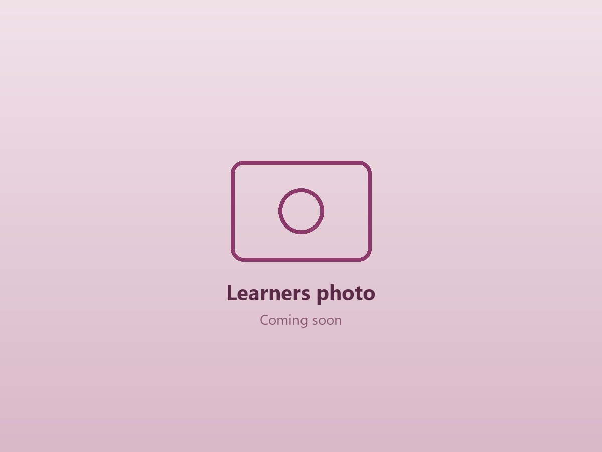
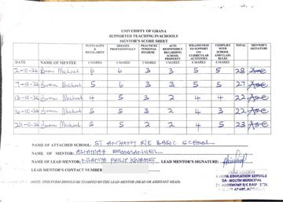

Reflections & Growth
What my school placement has taught me, and where I'm still growing.
My journey into teaching has taught me that every learner is different. My experiences have strengthened my desire to understand learners, appreciate their differences, and help them succeed in their own ways.

Growth Reflection
My school observations taught me that a school's culture is built on discipline, punctuality, respect and neatness among teachers and learners, and that learning also takes place beyond the classroom. Watching my STS partner taught me to manage the classroom calmly and confidently, to build strong relationships by being patient and respectful, and to stay organised and flexible.
“I believe every child can learn when the teacher is patient, prepared and fair.”
— Bram Michael BrenuAreas for Improvement
These are the areas of my teaching I most want to strengthen.
Classroom Management
Improve how I manage the class, especially when learners are noisy.
Confident Delivery
Become more confident when delivering my lessons.
Sustaining Interest
Learn better ways to keep learners interested and focused in class.
Reflective Journal
Key moments from my Student Reflective Journals, and what I learned from them.
Teacher Professionalism
Most teachers were punctual, neatly dressed and respectful to colleagues. Some used questions, group work and teaching materials to engage pupils, while others relied on chalk-and-talk. Well-prepared, friendly teachers had good classroom control.
Why Behaviour Matters
Shouting, lateness or favouritism harms a teacher's work. Pupils lose respect and trust, become afraid, shy or disruptive, and learning time is wasted. Watching such behaviour on playback helps a teacher notice mistakes early and correct them.
Traits I Will Build
Punctuality, patience, good preparation, respect and fairness, and creativity. Punctuality models discipline and protects learning time, patience helps me support slow learners, and creativity means using simple local materials to make lessons clear.
Mentor Feedback
My mentors scored my work every week on their score sheets, which close each of my reflective journals.
Year 1 score sheets
